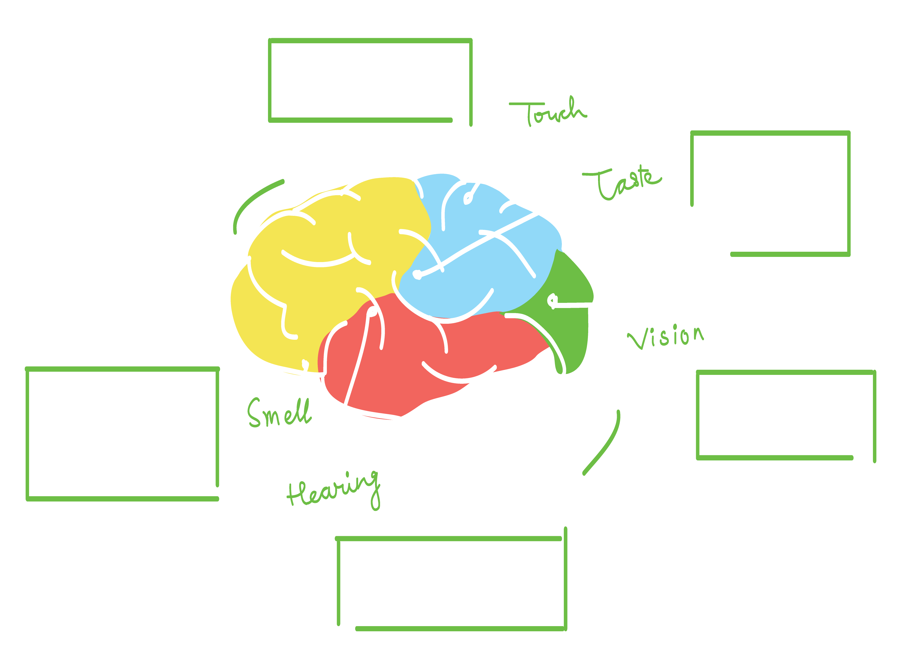

Taste is in the brain: Flavor mechanisms.
Info.
A review and the psychological background to multi-sensorial solutions
Methods.
· A Review
· Mechanism analysis
Background.
How do we understand the taste and search for the food 'we like'? Why are food choices so standardized.
Flavor is essentially in the brain but we often overlook this. How exactly do we 'taste' things and decide what to eat?
Process Overview

Flavor mechanisms
1. There is no pure tastant. Taste cannot exist alone, nor can other sensory cues. Flavor is essentially in the brain, not the food.
2. Nervous system integrates taste, smell, somatosensory inputs into a unitary flavor perception- synthesis (a theory is that it’s the tactile stimulation).
3. Flavor-flavor learning, flavor-nutrient learning lead to flavor preferences (biological, innate, affective responses).
| PHYSICAL STIMULI |
|---|
| Appetite Emotions, Preference, Hunger |
| Food sensations Olfactory, Visual, Auditory |
| Eating action Salivating, Chewing |
→
| PHYSIOLOGY |
|---|
| Sensory Activation Hearing, Odor, Tactile |
| Mastication Retronasal Odor, Tasting Mechanisms (TRP channels are expressed in taste buds, nerve fibers, transducing chemical stimuli, giving rise to sensations of taste, irritation, warmth, coolness, and pungency |
| Swallowing Complete Flavor |
↓
| PERCEPTION |
|---|
| Somatosensation Tactile, Thermal, Irritation |
| All Sensory, Contextual Reflection Taste receptors are located in discrete regions of the mouth but we perceive taste as arising from throughout the oral cavity. |
| Reference Built |
Brain and the Five Senses

Inclination to Certain Tastes
Through our past experiences from our ancestors, accumulated experience showed that sweet and fatty meant energy, hence a natural predilection from toddlers to prefer such tastes, while avoid the others which were indicators of poison or toxicity. Taste fiber carries particular taste quality. A theory in 1931 from Arthur Fox said that the phenylthiocarbamide (PTC) tastes can vary among people, meaning, everyone might have different inclination to tastes since birth. Propylthiouracil(PROP) is another substance being used to describe those who can taste them, people who feel more intense tastes, and those cannot. Some can be more sensitive toward the tastes, while some are not - leading to specific eating behaviors, tendencies, nutritional status and balance. 
Multi-modal perception
1. Reason why senses are perceived as one flavor, not separate is because a flavory is a synthesis, not analysis of each sense
2. Binding of odors, tastes, tactile qualities into flavors is a psychological construct; it is a functional and learned joint property rather than chemical interaction
3. Sweet odors can be used to reduce sugar content and salty odors can reduce sodium content of foods
4. Asking users to be analytic about each sensory attribute however reduces their overall liking
5. Flavors are far more important than a sum of each part
Significance of the Review
Flavor mechanism analysis is rudimentary prior to a research related to multi-modal and multi-sensorial integrations and to understand exactly on how humans perceive taste is the main research question and the framework to design such interfaces. It is seen that the olfactory synthesis with taste, sound, and tactile stimulation is phenomenal in perceiving taste, and it is the tactile stimulation that co-occurs to capture the taste. All sensory inputs are 'magically' transmitted from the CNS as a unitary flavor perception - the taste we know. However, this is often overlooked - most think if we were to provide each corresponding cue, we can replicate the 'flavor' of the food. It is a synthesis, not analysis in that separate provision of senses cannot devise a flavor replication. That is why it has been so difficult to emulate one with technology, and to reproduce digitally needs a more thorough, comprehensive and delicate research approaches.
Standardized Food choices

Another Food Choice Mechanism Theory
Anothery way to explicate how a user might choose a food is due to their past experiences and
stimulations, also closely related to physicological reactions, but more based on their experiences.
This could be the unconscious health-consciousness, social perceptions, product evaluations, or the
simply mood of the day.
It is vital to address how distinct factors are intertwined before the conduction of food-related
programs and experiments; as most rely on what they normally eat,
choose the familiar foods, than to venture out.

Research Guidelines
Projects
Setting the guidelines, and fascinated by the concept of generating the same multi-sensorial pleasure
with or without tasting foods in real-life,
I conducted projects centered on the food pairing theory, flavor mechanism theory, and the sensory exposure theory. Here are some of the archived projects:
Beer Food
Alcohol Pairing Algorithm
Eat From Packaging
Multi-sensorial Packaging
Multi-sensorial Interface
Smell from the Kiosk
Citations
1. Lycan, W. G. (2018). What Does Taste Represent?. Australasian Journal of Philosophy, 96(1), 28-37.
2. Small, D. M. (2012). Flavor is in the brain. Physiology & behavior, 107(4), 540-552.
3. Schifferstein, H. N., Fenko, A., Desmet, P. M., Labbe, D., & Martin, N. (2013). Influence of package design on the dynamics of multisensory and emotional food experience. Food Quality and Preference, 27(1), 18-25.
4. Velasco, C., & Spence, C. (Eds.). (2018). Multisensory packaging: Designing new product experiences. Springer.
5. Ahn, Y. Y., Ahnert, S. E., Bagrow, J. P., & Barabási, A. L. (2011). Flavor network and the principles of food pairing. Scientific reports, 1(1), 1-7.
6. Prescott, J. (2015). Multisensory processes in flavour perception and their influence on food choice. Current Opinion in Food Science, 3, 47-52.
7. de Sousa, M. M., Carvalho, F. M., & Pereira, R. G. (2020). Colour and shape of design elements of the packaging labels influence consumer expectations and hedonic judgments of specialty coffee. Food Quality and Preference, 83, 103902.
8. Kumar, S., Higgs, S., Rutters, F., & Humphreys, G. W. (2016). Biased towards food: electrophysiological evidence for biased attention to food stimuli. Brain and cognition, 110, 85-93.
9. Beker, S., Foxe, J. J., & Molholm, S. (2018). Ripe for solution: Delayed development of multisensory processing in autism and its remediation. Neuroscience & Biobehavioral Reviews, 84, 182-192.
10. Shimizu, S., Takahashi, N., & Mori, Y. (2014). TRPs as chemosensors (ROS, RNS, RCS, gasotransmitters). Mammalian transient receptor potential (TRP) cation channels, 767-794.
11. MIT OpenCourseWare 9.35 Sensation And Perception Spring 2009.
Next Project →
Potato Chip Flavor Visualization
← Previous Project
AI Persona
© 2021 Eunsol Choi. All Rights Reserved. Built with HTML/JS/JQUERY/🌞